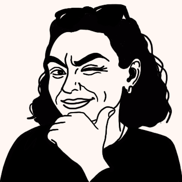

This page collates the contributions by readers of Erased. Thank you for sharing your stories.
This is the same dot graph featured in the story, here, it is now populated with live responses placed by readers, mapping where they feel they stand on the connection spectrum.


Giulia Serrelli is a Master's student at Goldsmiths, University of London in Digital Journalism. This feature is part of her final project where she blends data with the art of storytelling and design. Other projects include Mystic Tarots.